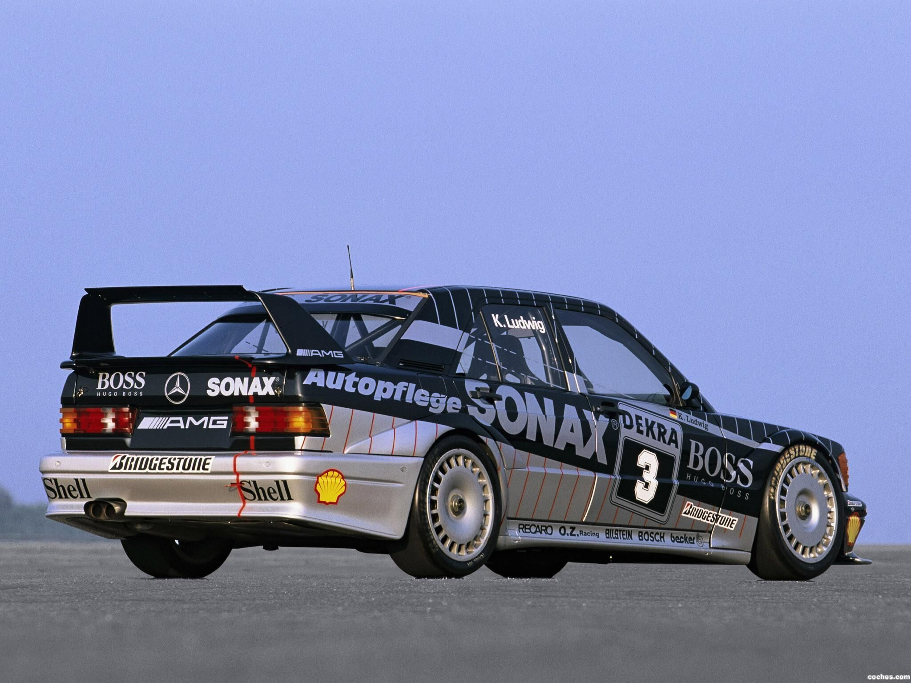
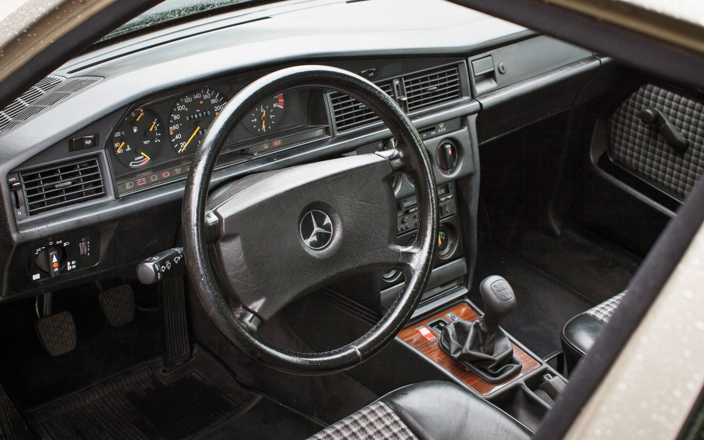
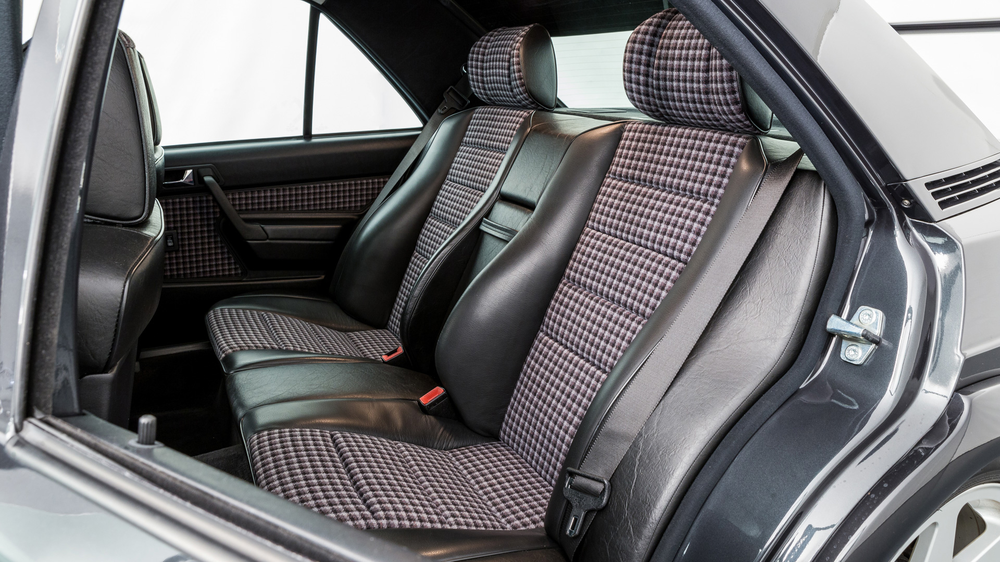

Mercedes 190E (1982-1993)

The Mercedes-Benz 190E marked a defining moment for the brand, introducing a compact executive sedan that blended precision engineering with understated elegance. Unveiled in 1982, it was Mercedes' first true foray into the smaller luxury segment, a car designed not just to compete, but to set new benchmarks in refinement, safety, and durability. Developed over nearly a decade with an unprecedented budget, the 190E featured advanced aerodynamics, multi-link rear suspension, and an obsessive attention to detail that resulted in a car that felt solid, composed, and sophisticated at any speed. Whether gliding through city streets or devouring miles on the autobahn, it maintained a level of stability and comfort that was rare for its class.

Beneath its clean, purposeful lines lay a machine that exemplified the Mercedes-Benz philosophy of longevity and precision. The interior, wrapped in high-quality materials, felt meticulously crafted, with ergonomics that placed everything exactly where it belonged. Seating was firm yet comfortable, emphasizing long-distance capability, while the bank-vault-like build quality instilled confidence with every door shut. Though it was positioned as an entry-level model, the 190E never felt compromised—rather, it embodied the ethos of the larger S-Class in a smaller, more efficient package. It was a car that redefined expectations and solidified Mercedes’ reputation as a maker of cars engineered not just for the present, but for generations to come.
Born from a relentless pursuit of motorsport dominance, the high-performance variants of the Mercedes-Benz 190E—the 2.3-16, 2.5-16, and the Evolution models—were conceived as homologation specials for the fiercely competitive world of touring car racing. Initially developed in collaboration with Cosworth, the 2.3-16 was meant to spearhead Mercedes' return to rallying, but when Audi’s quattro revolution reshaped the sport, the focus shifted to circuit racing instead. The result was a precision-engineered sports sedan with a high-revving, twin-cam engine and aerodynamic refinements that subtly hinted at its intent. The later 2.5-16 brought increased displacement and further refinements, but it was the Evolution models that truly defined the breed. With aggressive aero, wider fenders, and a reworked chassis designed to dominate the Deutsche Tourenwagen Meisterschaft (DTM), the Evolution I and II pushed the 190E into legendary status. The Evo II, with its towering rear wing and unmistakable presence, became one of the most iconic homologation cars of its era—a road-going embodiment of Mercedes' commitment to engineering excellence and motorsport prowess.
The 190E lineup spanned a broad range of models, from the economical diesel variants to the high-performance Cosworth-engineered editions. The diesel models, such as the 190D 2.0, 2.2, and 2.5, were known for their durability, with some examples accumulating hundreds of thousands of miles with routine maintenance. While not particularly fast, they offered exceptional fuel economy and a level of refinement uncommon in diesel cars of the era. On the other end of the spectrum, the 190E 2.3-16 and 2.5-16, developed with Cosworth, featured advanced multi-valve cylinder heads and rev-happy engines producing up to 204 horsepower in the later 2.5-16 model. The Evolution I and II, built in limited numbers for homologation purposes, pushed performance even further, featuring aggressive aerodynamics, a track-focused suspension, and engines capable of revving to 7,700 rpm. These special variants cemented the 190E’s place in motorsport history, particularly in the fiercely competitive DTM racing series.
When considering a 190E today, rust is one of the primary concerns, particularly in areas like the wheel arches, jacking points, and underbody. Diesel models are known for their longevity, but glow plugs, fuel injectors, and vacuum systems should be inspected. Gasoline models, especially the 16-valve and Evolution cars, require more meticulous maintenance, with timing chain wear and hydraulic lifter issues being common points of concern. The rear self-leveling suspension found on higher-spec models should also be checked for leaks or worn accumulators. Transmission choice plays a role in driving enjoyment—the four-speed automatic is durable but less engaging than the five-speed manual, which should be inspected for worn synchros. Despite their age, well-maintained examples of the 190E remain rewarding to drive, offering a unique blend of Mercedes-Benz build quality and engaging dynamics that set them apart from their contemporaries.